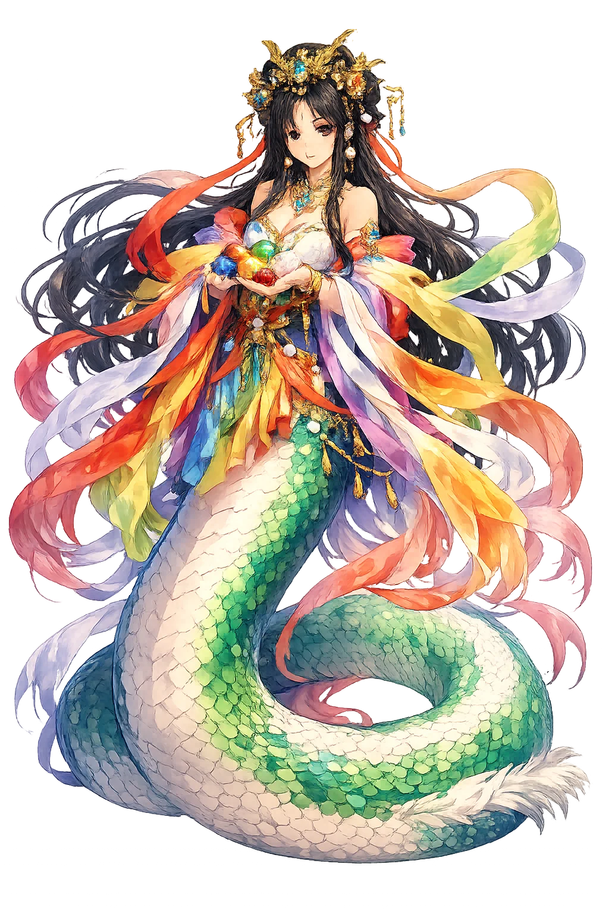
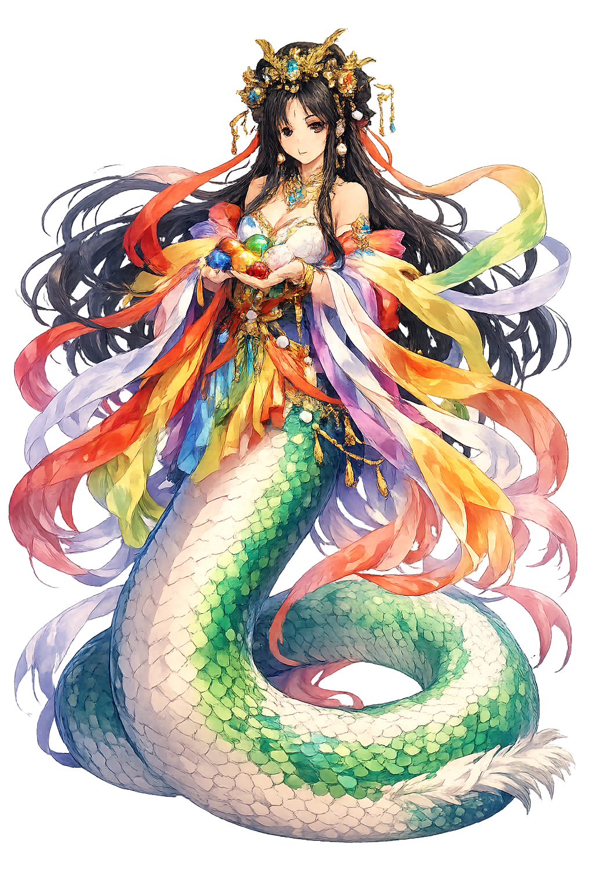

Unicode restoration and ASCII comparison
女媧
The name in its original Chinese form. Nǚwā (女媧) is attested in the source tradition — “Woman wa”. Its macron-length vowels carry the full phonetic and orthographic weight of the source tradition.
nuwa
Reduced to plain nuwa, the name loses everything that made it specific: macron-length vowels. What remains is an ASCII string that machines can parse but that no longer speaks with its original voice.
Nǚwā
The Unicode restoration recovers what ASCII flattened. Nǚwā restores macron-length vowels, returning the name to its original written dignity. The domain encodes to Punycode, but the browser displays the truth.
Nǚwā.com → xn--nw-ela08f.com
The non-ASCII characters in Nǚwā are encoded while the ASCII remains visible. To the DNS, it is Punycode. To humanity, it is Nǚwā.
How Nǚwā is preserved in writing
A bespoke provenance study for Nǚwā is being prepared by the PUNICODEX scholarly team.
Contribute scholarly provenance →How Nǚwā was spoken
The Five-Colored Stones, the Clay, and the First People
Nǚwā is the great repairer: the goddess who melted five-colored stones to patch the broken sky, cut off the giant turtle's legs to prop the corners of the world, and — on a quieter day — knelt by the Yellow River and made the first human beings out of mud.
Melted and poured into the sky's wound — the world's first and greatest repair.
Her form in Han art: human head, serpent body — earth's maker in earth's image.
The rich she shaped by hand, the poor she flung from a rope — humanity's two fortunes.
She instituted marriage and is prayed to for children — society's first legislator.
Stories of Nǚwā
Nǚwā's two great myths answer the two great questions: where people came from, and why the sky holds. Both are told in the earliest strata of Chinese myth and never improved upon.
The Huáinánzǐ tells it: in high antiquity the four pillars snapped, the nine provinces split; fire raged unquenched, waters rose undrained; fierce beasts devoured the people. Nǚwā melted stones of five colors to mend the azure sky, cut the legs of the great turtle to set the four pillars, slew the black dragon to save Jì province, and heaped reed-ashes to dam the flood. Then — and only then — the world was habitable, and the beasts went quiet.
The later compendia preserve the gentler myth: Nǚwā, walking alone in the empty world, knelt by the river and shaped human beings from yellow clay. The work delighted but wearied her — so she trailed a rope through the mud and flung the drops, which became people too. The handmade figures became the rich and noble; the rope-flung drops, the poor and common — China's oldest reflection on how inequality began.
Having made people singly, she made them continuous: Nǚwā instituted marriage and the go-between, so that humanity could reproduce itself without her kneeling by the river forever. She is therefore prayed to for children and for marriages — the goddess who outsourced creation to love. The tradition names her among the Three August Ones: progenitor, legislator, and engineer in one.
Nǚwā is the goddess of the second day — the one after the catastrophe. Creation, in her myth, is not a single word but a continuous mending: sky patched, pillars reset, people shaped and taught. She asks the question every survivor, every parent, every civilization must answer: the world broke once; what, with your own two hands, have you repaired?
Enter Extended Lore